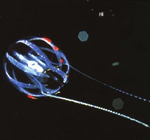

| Abbr. name of the public transportation system in the hometown of the player seen here
|
| Joe Orton play made into a Richard Attenborough film | 
Word on this album |
Singer heard here
| |
| Animal seen here
|
|
| An abrupt rise of tidal water moving rapidly inland from the mouth of an estuary | Boy seen here
|
| or | Kind of tape used here
|
| Pays dollars for quarters? |
|